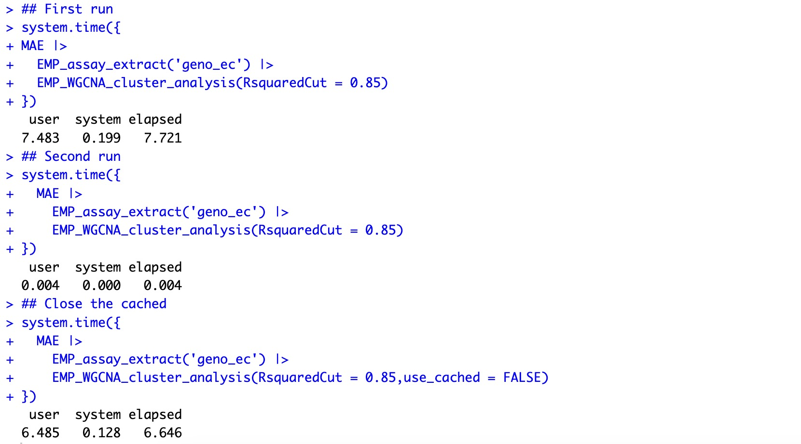

1. EasyMultiProfiler
EasyMultiProfiler package adopts an object-oriented programming method, integrates multiple data analysis modules, and realizes smooth data transfer between different modules, thus standardizing and clarifying the overall analysis process. EasyMultiProfiler not only includes the current mainstream data pre-processing methods but also has powerful analysis capabilities. It covers a variety of mainstream analysis methods (including diversity analysis, cluster analysis, correlation analysis, difference analysis, dimensionality reduction analysis, etc.), and also supports GSEA analysis, WGCNA analysis, and multi-omics analysis. Users can quickly explore data features and patterns and visually interpret analysis results in a variety of visualizations, including box plot, scatter plot, enriched dot plot, enriched network plot, bivariate plot, enriched curve plot, heatmap, sankey plot, and structural histogram. All in all, EasyMultiProfiler provides users with a one-stop data processing, analysis, and visualization service, greatly simplifying intermediate processes, and is logically clear and very beginner-friendly.
1.1 EasyMultiProfiler Installation
R version must be above 4.3.3. (IMPORTANT!!)
1.1.1 First installation
(1) Mac os users
Option 1 (Recommended) :
Step 1： Install the gfortran Compiler Environment
Many R packages require a compiler environment during installation. To ensure maximum compatibility, it is recommended that new users install the following version of gfortran rather than the latest version.
Download link: Official Source
Step 2： Install Using pak
if (!requireNamespace("pak", quietly=TRUE)) install.packages("pak")
pak::pak("liubingdong/EasyMultiProfiler")
library(EasyMultiProfiler)
Option 2 :
Step 1： Install clusterProfiler
if (!requireNamespace("BiocManager", quietly=TRUE)) install.packages("BiocManager")
BiocManager::install("clusterProfiler")
library(clusterProfiler)
Step 2： Install Using remotes
if (!requireNamespace("remotes", quietly=TRUE)) install.packages("remotes")
remotes::install_github("liubingdong/EasyMultiProfiler")
library(EasyMultiProfiler)
(2) Windows users
Step 1： Install RTool
- According to the installed R version, install the corresponding version of RTool (e.g. R 4.3.x requires RTool 4.3, R 4.4.x requires RTool 4.4).
- RTool download address 1: official original address; download address 2: Chinese mirror address.
- RTool installation steps: On the download page, click
[Download R for Windows]→[Rtools])
Step 2： After successfully installing the corresponding version of RTool, please restart R.
Step 3： Install the EasyMultiProfiler package using the pak package.
if (!requireNamespace("pak", quietly=TRUE)) install.packages("pak")
pak::pak("liubingdong/EasyMultiProfiler")
library(EasyMultiProfiler)
1.1.2 Update version
EasyMultiProfiler is constantly updating more analysis and visualization modules, and when an update is needed, it can be updated by running the pak package again.
pak::pak("liubingdong/EasyMultiProfiler")
library(EasyMultiProfiler)
1.2 Quick start for EasyMultiProfiler
To get started with EasyMultiProfiler and explore its capabilities, we begin with some interesting examples.
Quick Analysis for Microbiome Analysis
Quick Analysis for Transcriptomics Analysis
Quick Analysis for Metabolomics Analysis
Quick Analysis for Experiment data (eg. Mice weight...)
Quick Analysis for qPCR result
1.3 EasyMultiProfiler Basics
1.3.1 Data Object Container for EasyMultiProfiler
MAEobject: namelyMultiAssayExperiment.MAEobject is an object that users need to create initially. It is usually composed of assay and corresponding coldata and rowdata of multiple omics projects (see Section 1.2.2 for relevant definitions).MAEobject of single omics project can also be created.EMPTobject: namelyEMP-transporter.EMPTobject is extracted fromMAEobject.EMPTobject inheritsSummarizedExperimentdata storage object, mainly includingassay,rowdata,coldata, and parameters required for various process analysis.EMPobject: When multipleEMPTobjects are analyzed jointly, they can be merged into oneEMPobject.
① In order to ensure the original data is not tampered with as much as possible, the process from MAE to EMPT during data analysis is unidirectional, meaning that an EMPT object cannot be put back into an MAE object.
②If you need to modify the EMPT object within the MAE object, simply adjust the EMPT object, and reassemble it into the MAE object.
③When conducting joint analysis, the EMPT objects can be directly combined using the + symbol to form EMP objects, thus facilitating the process of multi-omics analysis.
④When the names of the projects involved in the combination are the same, the name of the subsequent project will be automatically modified to ensure the uniqueness of the project names in the EMPT object.
1.3.2 Data Composition of EasyMultiProfiler
Each project data stored in the MAE object contains the following three contents: assay、coldata 、rowdata. assay refers to the experimental data of the project; coldata refers to the sample-related data; and rowdata refers to the feature-related data.
| Assay | Coldata | Rowdata | |
|---|---|---|---|
| Column | Feature | Sample related data | Feature related data |
| Row | Sample ID | Sample ID | Feature |
1.3.3 Data Presentation of EasyMultiProfiler
EasyMultiProfiler package uses tibble format (a data frame type) to present data, where under the tibble column names, users can view the corresponding column data types. Common data types include: int - integer type, dbl - floating point type, chr - string type, lgl - logical type (True and False), fct - factor type, date - date type, dttm - datetime type.
1.3.4 Data Transfer of EasyMultiProfiler
EasyMultiProfiler package uses |> operator to facilitate data transfer, where the output of the previous module serves as the input for the next module (similar to the function of the %>% operator in package Magrittr ), thus enabling sequential data processing operations. Because EMPT objects are passed through the data analysis process, there is little mandatory analysis order throughout the process. Users are free to explore data analysis in individual modules without worrying about matching data delivery.
1.3.5 Action Parameters of EasyMultiProfiler
When the EasyMultiProfiler package performs data analysis, project data is stored in EMPT object and passed between functional modules. After the user completes the analysis of a module, the parameter action can be used to extract the original analysis results generated by the module. The default value of this parameter is action='add', which means that the analysis result of the current module will be added to the EMPT object for transmission; action='get', which means that the analysis result of the current module will be directly output.
The parameter action in the module EMP_filter is used to specify whether the module operation is to kick or select.
1.3.6 Caching Mechanism of EasyMultiProfiler
The main analysis modules of EasyMultiProfiler package have a cache snapshot mechanism, that is, when the same data is used for analysis repeatedly, the analysis process will automatically extract the corresponding data analysis results from the cache according to the hash value, so as to avoid double calculation. This caching feature greatly improves the convenience of the analysis process and avoids the need to create multiple intermediate variables in traditional data analysis to store complex computing results. Users only need to pass the current calculation results through the |> operator to successfully complete each analysis step, making the entire analysis process clearer and more concise.
① The caching mechanism takes into account the differences between data, parameters and modules, and eliminates the possible data conflicts.
② If you need to recalculate, you can specify the parameter use_cached=FALSE to cancel the cache of this module.
🏷️Example： The first calculation takes about 7 seconds. When it was calculated again, it took only 0.004 seconds.
data(MAE)
## First run
system.time({
MAE |>
EMP_assay_extract('geno_ec') |>
EMP_WGCNA_cluster_analysis(RsquaredCut = 0.85)
})
## Second run
system.time({
MAE |>
EMP_assay_extract('geno_ec') |>
EMP_WGCNA_cluster_analysis(RsquaredCut = 0.85)
})
## Close the cached
system.time({
MAE |>
EMP_assay_extract('geno_ec') |>
EMP_WGCNA_cluster_analysis(RsquaredCut = 0.85,use_cached = FALSE)
})
